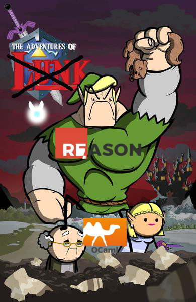

It's dangerous to go without Typesafety, take this


@defuex
General
- New programming language or just syntactic sugar?
- Based on OCaml
- Integrated typesystem
- Different language styles
- Mostly Functional
- Imperative
- Object Oriented
Other Static Type Systems
- TypeScript
- Static Type System
- Written Superset of JavaScript that compiles to JavaScript
- Not sound, No pattern matching
- Large apps take time to be compiled by Typescript
- Flow
- Targets the same issues
- A JavaScript preprocessor
- Written in Ocaml
Reason (OCaml) Type System
- Strongly typed
- ML-like sound type system
- Pattern matching included
- No Runtime Type Errors (after type checking)
- e.g.: undefined is not a function
- In pure Reason there is no null (no null pointer exceptions)
Focus of Reason
- Familiar syntax for JavaScript developers
- Interoperability with JavaScript through BuckleScript
- Tooling & Good developer experience (better error messages)
- React (built-in syntax etc.)
- Better standard library (Belt = work in progress)
- npm based workflow
Semantics and Language Features
Types
Definition:
let goal = 10;
Explicitly written type:
let goal: int = 10;
Types
Wrapping expression and types:
let myInt = (5: int) + (4: int);
Function declaration with parameters and their types:
let add = (x: int, y: int) : int => x + y;
It's also possible to use a different name for a type:
type scoreType = int;
let x: scoreType = 10;
Record
- like JavaScript Objects
- defined by keyword type
- but lighter, immutable (default), very fast
- needs explicit declarations
- ... spread operator can be used to create new immutable records
- fields can be defined with keyword mutable
- Record Types are found by field
Record
Definition:
type person = {age: int, name: string};
let me: person = {age: 30, name: Tim};New record created from old record:
let meNextYear = {...me, age: me.age + 1};
Make field of record mutable:
type person = {age: int, mutable name: string};
Variant
- data structure (enum on steroids)
- Normally only seen in languages with functional paradigms
- "this or that" clause
- A Variant can carry values (constructor arguments)
- Reason does not have null (has option variant instead)
Variant
Definition:
type myResponseVariant =
| Yes
| No
| PrettyMuch;
let areYouCrushingIt = Yes;Constructor Arguments & Pattern Matching
Let's take following example to explain pattern matching
type payload =
| BadResult(int)
| GoodResult(string)
| NoResult;Constructor Arguments & Pattern Matching
let data = GoodResult("Product shipped!");
Constructor Arguments & Pattern Matching
let data = GoodResult("Product shipped!");
let message =
switch (data) {
| GoodResult(theMessage) => "Success! " ++ theMessage
| BadResult(errorCode) => "Something's wrong.
The error code is: " ++ string_of_int(errorCode)
};Constructor Arguments & Pattern Matching
Warning 8: this pattern-matching is not exhaustive.
Here is an example of a value that is not matched:
NoResultFunctions
- Declared with arrow
- Labeled Arguments (no extra creation of objects)
- Optional Labeled Arguments (default value possible)
- Currying
Functions
Definition:
let greet = (name) => "Hello " ++ name;
or
let greetMore = (name) => {
let part1 = "Hello";
part1 ++ " " ++ name
};Functions
Labeled Arguments:
let addCoordinates = (~x, ~y) => {
/* use x and y here */
};
addCoordinates(~x=5, ~y=6);Different argument name:
let drawCircle = (~radius as r, ~color as c) => {
setColor(c);
startAt(r, r);
};Functions
Optional Labeled Arguments:
let drawCircle = (~color, ~radius=?, ()) => {
setColor(color);
switch (radius) {
| None => startAt(1, 1)
| Some(r_) => startAt(r_, r_)
}
};Functions
Currying:
let add = (x, y) => x + y;
/* Semantically the same as following definition */
let add = (x) => (y) => x + y;
ReasonReact
-
Safe and statically typed
- DOM is abstracted
- not worrying about DOM types
- Reason code compiles to idiomatic ReactJS
- Stable for production
- Used by facebook messenger
Why Reason?
- Fast build system
- OCaml semantics
- Great ecosystem
- BuckleScript
- Compiling to different platforms
- Syntax similar to JavaScript
- Reason syntax accepts JSX
- ReasonReact
Code Demo
Getting Started
- Install BuckleScript build system
npm install -g bs-platform
Getting Started
Use a project template
- Pure Reason Project (without ReasonReact)
- Minimal ReasonReact Project Setup
- More configured ReasonReact Setup
Use a project template
bsb -init my-first-app -theme basic-reason
bsb -init my-react-app -theme react
yarn create react-app *app-name*
-- --scripts-version reason-scriptsJust the beginning…
|  |
https://reasonml.github.io/en/
https://bucklescript.github.io/
https://reasonml.github.io/reason-react/
Thanks! :) @defuex